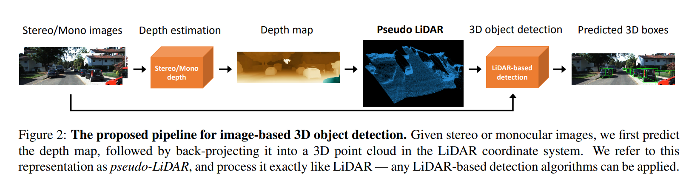
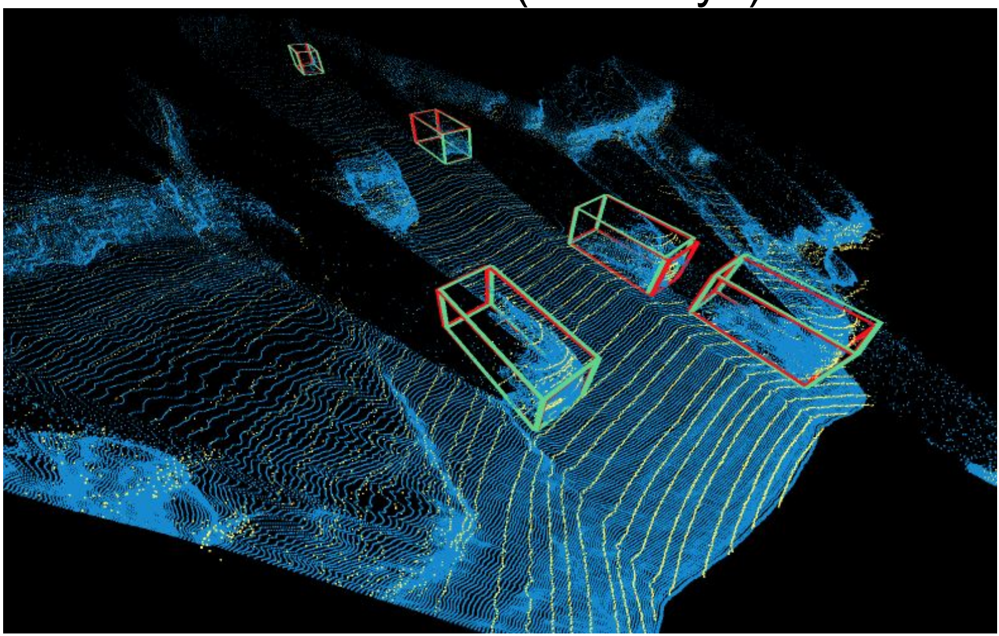
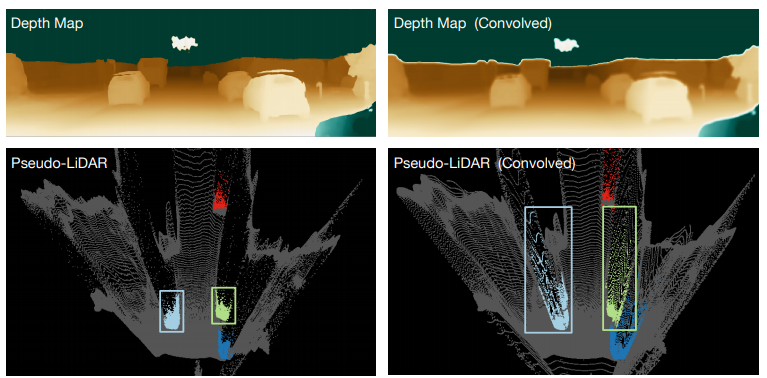
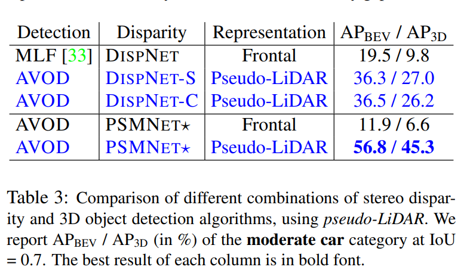
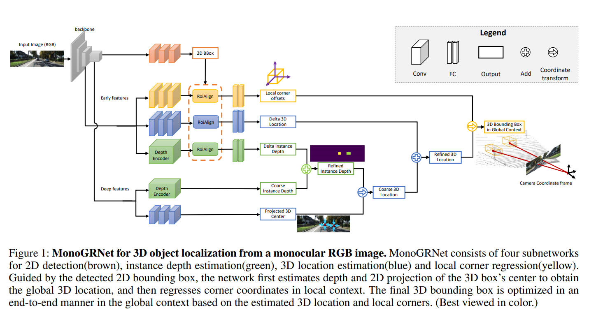
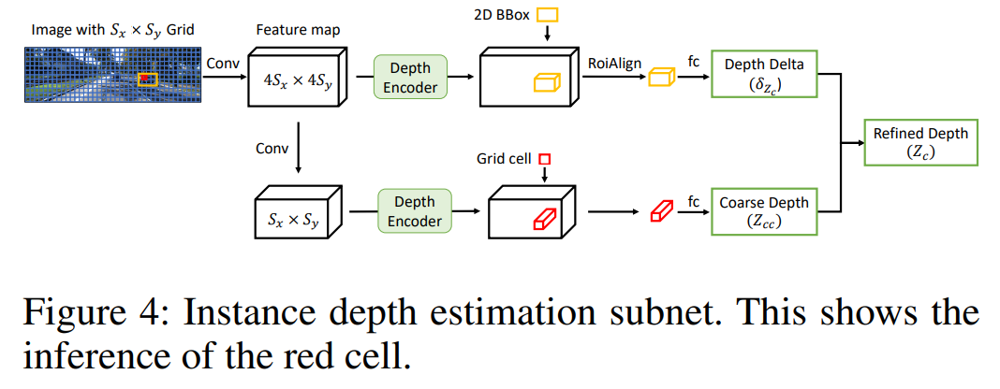

单目3D目标检测论文笔记
Pseudo-LiDAR from Visual Depth Estimation
概述
这篇文章最核心的观点在于认为导致基于单目/双目图像3D目标检测与基于LiDAR数据进行3D检测的效果差异的主要原因，并不在于数据的质量上（深度数据的精准程度等等），而是在于数据的表示方式上。提出的Pseudo-LiDAR将2D图像中得到的深度估计，按像素反投影到3D空间中，转换成3D点云的形式；再应用基于LiDAR数据（多视图、点云等）的检测方法进行检测。并对这个方法的实验效果进行了对比。
相关工作
提到了LiDAR-based和Image-based的3D目标检测，以及基于双目/单目图像的深度检测。
LiDAR-based的方法是这篇文章的inspiration，提到了将PointNet应用于2D目标检测中的每一个frustum(视锥体)proposal的frustum PointNet；用多视图来做3D检测的MV3D；转换成三维像素用3D卷积来做的VoxelNet；在图像和BEV上应用continuous convolutions的UberATG-ContFuse。
单目深度估计提到了将多尺度的特征与有序性回归结合进行预测的DORN；双目提到了PSMNet。
基于图像的3D目标检测可以成为LiDAR的一个替代；大部分方法都基于2D目标检测，然后加上一些额为的集合限制来得到3D proposals；有的用双目深度检测给每个像素找到一个3D坐标，然后把这个坐标作为一个额外的通道输入到2D检测的pipeline中或者用以抽取一些手动设计的特征。效果还不理想，可能是由于深度的表示方式不合适。
用LiDAR和Vision做3D检测的异同点
LiDAR
- 价格比较昂贵，而且使用单一传感器有风险，需要临时能够替代的传感器确保安全和精度；
- 数据是稀疏的深度数据，可以用3D点云表示，从多视图观察；
- 深度误差小，相较于图像越远的物体深度估计的误差越大，LiDAR的深度估计是基于Time-of-Flight的，几乎是线性的误差；
- 因为可以直接给出准确的坐标，所以检测的重点在于分类和确定3Dbbox
Vision
- 比较便宜，装多个摄像头也没问题，视频帧率高
- 深度估计的误差大，且相较于图像越远的物体深度估计的误差越大（在图像上尺寸太小）
在2D图像上连续的像素可能在3D空间中距离很远
检测的重点还在于深度估计的可靠性
方法思路
Pipeline

- 通过深度检测从单目/双目图像中得到深度图
- 将深度图中的像素反投影到3D空间中，得到Pseudo-LiDAR
- 基于Pseudo-LiDAR做3D目标检测，得到3Dbbox和分类标签
深度检测
文章用的是双目的深度估计，基于左右图像，得到视差图，然后以一个图位参考图像，由改图水平方向的焦距进行估计： ；也可以用单目深度估计替代。
生成Pseudo-LiDAR信号
原理是像素坐标系到相机坐标系的投影
最后得到点云形式的Pseudo-LiDAR信号，可以被转换到鸟瞰图或者其他方向的视图
LiDAR和pseudo-LiDAR的异同
因为要尽可能与现存的LiDAR pipeline相适应，所以要对pseudo-LiDAR信号进行一些处理。
- 高度限制：真实的LiDAR只会有一定高度范围内的信号，所以按KITTI的标准只保留信号源上方1m之内的pseudo-LiDAR信号，而且因为KITTI是自动驾驶的情景，也不需要考虑上方的物体
- 反射率：LiDAR还会检测到每个点的反射率，这里将反射率全部设为1
- 真实LiDAR其实数据点更加稀疏一些，取决于雷达激光束路数；但是pseudo-LiDAR数据点数量和像素数量相当，这里保留这种差异
两种信号的对应情况还是比较好的（蓝色点、绿色框pseudo-LiDAR； 黄色点、红色框LiDAR）：

3D目标检测
这里用了两种不同的setup
- frustum PointNet：直接对3D点云形式的数据进行处理，将2D物体检测投影到3D上的一个frustum上，然后应用PointNet来对每个3D frustum抽取点集特征
- AVOD：从BEV来处理，把宽度和深度信息转换成2D上的两个维度，将高度作为一个通道；再通过AVOD将图像特征和BEV特征转换成3D proposals，然后再将两者融合用于box的分类和回归
数据表示方式的重要性
这里说明了为什么他们认为pseudo-LiDAR在3D目标检测中必深度图更适合深度卷积网络。
首先了考虑在图像和深度图上应用2D卷积的方法；2D卷积是基于两个假设的：
- 图像的一个局部邻域是有意义的，网络应该关注图片的一块局部
- 所有的邻域都能用一种一致的方法来处理
但是对应第一点来说，二维图像上的局部只有所有像素都属于一个物体的时候，在物理上才是连续的；对于第二点，如果一个局部区域在物体边界上，两个在深度图上相邻的像素在三维空间中可能距离很远。所以文章认为现存的方法违反了这两个假设，不得不用类似于特征金字塔之类的方法来解决。与此同时，点云上的点和BEV上相邻的像素在物理上都是相近的。为了说明这点，文章用深度图和用11x11卷积处理后的深度图分别生成的pseudo-Lidar进行了比较，可以发现影响确实很大。

实验
具体细节略过
实验结果
- 比较了单目的深度检测DORN和双目的深度检测PSMNet，发现前者需要差不多多十倍数据来训练，而且这种情况下仍然后者效果更好；这里说明双目的深度估计仍然是一个更好的方向
- 比较将3维坐标值与RGB图像连接的MLF-stereo与本文方法，说明了pseudo-LiDAR表示形式的优越之处
这张表说明了双目视差检测的精确度差异对最后的检测效果影响不大
行人和自行车的检测：IoU0.5下的AP比IoU0.7下的车的AP要低得多，是一个更加challenging的task
Future work
- 更高分辨率的双目图像
- real-time，现在的方法一张图需要1s
- 一个可能的改进：先计算低分辨率的深度图，然后用高分辨率的去refine之前的结果
- model distillation，anytime prediction
MonoGRNet: A Geometric Reasoning Network for Monocular 3D Object Localization
概述
由于图像投影时的集合信息损失，通过单独一张RGB图像定位3D空间中的目标是很有挑战性的。本文提出的MonoGRNet通过在观察到的2D投影还有未观察到的深度纬度进行几何推理来实现单目RGB图像3D空间定位。MonoGRNet由4个负责不同任务的子网络构成，分别是2D目标检测，实体深度估计(IDE)，3D定位以及局部角点回归。与每个像素都需要标注的像素级别的深度检测不同，本文用稀疏监督的方式直接预测目标3Dbbox的中心的深度。3D定位则通过估计水平维度和竖直维度上的位置进一步实现。最后，MonoGRNet通过利用全局上下文优化定位和3Dbbox进行联合学习。
主要贡献
- 提出了一种现金的实例级别的深度估计方法，在没有稠密深度数据的情况下直接预测ABBox-3D中心的深度，无论物体遮挡情况和截断情况如何
- 一种先进的3D定位结构，能够探索2D图像中的丰富的特征表示方式，拓展到3D上下文中的几何推理
- 一个通过联合优化协调2D、2.5D、3D空间内的物体定位的统一的网络，且具有很高的推理效率（0.06s一张图）
相关工作
提到了2D、3D目标检测和单目深度检测。
- 之前的3D检测工作中需要用到如语义分割、上下文先验或者与训练的视差估计模型来促进3D感知，而本文的方法只需要3Dbbox标注，且不需要其他网络辅助，故本文的模型更加轻量级且高效。
- 像素级的深度估计有以下一些问题，所以本文提出的是基于稀疏监督的联合语义信息与几何特征的实例级别深度估计
- 每个像素的深度都无差别对待，但是位于目标中的像素比位于背景中的像素要少得多，较低的平均误差不代表目标中的像素深度估计准确
- 越远的区域误差越大
方法思路
模型总览

问题定义
给定单目RGB图像，求3DD空间内指定类型目标的定位位置，目标用一个class label和一个ABBox-3D来表示。
ABBox-3D：，在相机坐标系内的坐标
八个局部顶点为，以中心点为原点的坐标系中的相对坐标
- 拆分成几个任务
- 2D box ，中心, 大小，是检测到的ABBox-3D的投影
- 3D中心，通过2D中心和其预测的深度值的投影得到
- 局部定义点
2D检测
（这里提到的这个设计我还没有具体地去了解）
使用了Teichmann et al. 2016中的检测组件设计，其中结合了Redmon et al. 2016中的快速回归和与size相适应的RoiAlign（He et al. 2017）来达到准确率与速度的合理平衡。输入图像会被分为的网格，其中每一个格子用表示。输出的feature map和网格规模一样，每一个像素对应着一个cell会产生一个预测，其中包括该区域是否存在目标的置信度以及该目标的2Dbbox的回归即。在对预测的2Dbbox利用RoiAlign层提取高分辨率的早期特征对预测结果进行优化。
实例级深度检测
IDE子网对已经分好的网格中点每个格子预测在距离阈值范围内最近的一个实例的3D中心深度；而在refinement阶段只要把2Dbbox中心占据的那个区域的编码深度特征抽取出来就可以了。然后还对浅层的feature map(分辨率更高，感受野更小)中包含实例的区域回归了一个稀疏的小的深度偏移来refine深层的结果

3D位置估计
除了一般的2D+depth到3D反投影之外，还加上了一个用深层特征回归的offset
3D Box顶点回归
在浅层（早期）feature maps上预测出2dbbox对应的